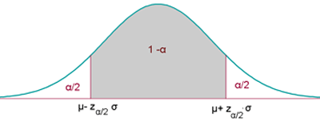
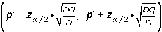

Contraste Bilateral
Contraste Bilateral
Se presenta cuando la hipótesis nula es del tipo H0: μ = k (o bien H0: p = k) y la hipótesis alternativa, por tanto, es del tipo H1: μ≠ k (o bien H1: p≠ k).

El nivel de significación α se concentra en dos partes (o colas) simétricas respecto de la media.
La región de aceptación en este caso no es más que el correspondiente intervalo de probabilidad para x o p', es decir:

o bien:

Se sabe que la desviación típica de las notas de cierto examen de Matemáticas es 2,4. Para una muestra de 36 estudiantes se obtuvo una nota media de 5,6. ¿Sirven estos datos para confirmar la hipótesis de que la nota media del examen fue de 6, con un nivel de confianza del 95%?
1. Enunciamos las hipótesis nula y alternativa:
H0 : μ = 6 La nota media no ha variado.
H1 : μ ≠ 6 La nota media ha variado.
2. Zona de aceptación
Para α = 0.05, le corresponde un valor crítico: zα/2 = 1.96.
Determinamos el intervalo de confianza para la media:
(6-1,96 · 0,4 ; 6+1,96 · 0,4) = (5,22 ; 6,78)
3. Verificación.
Valor obtenido de la media de la muestra: 5,6 .
4. Decisión
Aceptamos la hipótesis nula H0, con un nivel de significación del 5%.